Objetivo do Jogo
O objetivo principal é reduzir os pontos de vida do oponente de 20 para 0. Você também pode vencer ao causar condições especiais descritas em certas cartas ou se o adversário não puder comprar cartas quando necessário.
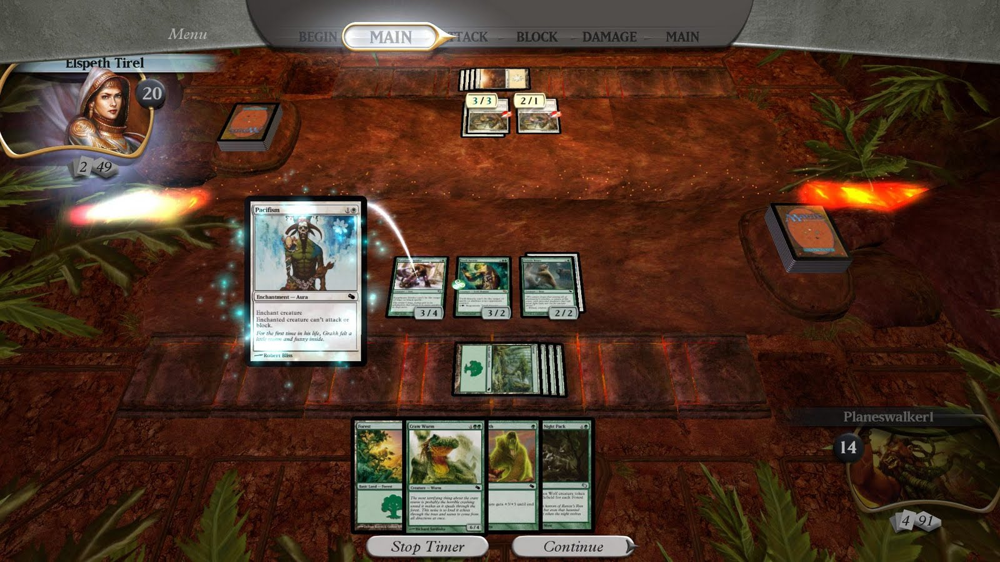
Materiais Necessários
Um deck de Magic com pelo menos 60 cartas (ou 40 em jogos como o formato draft apesar de ter escrito muitos formatos na sessão de formatos conhecidos como eternos, existem outros).
+ Um espaço para jogar.
+ Contadores de vida (pode ser papel, caneta, dados {D20} ou aplicativos).
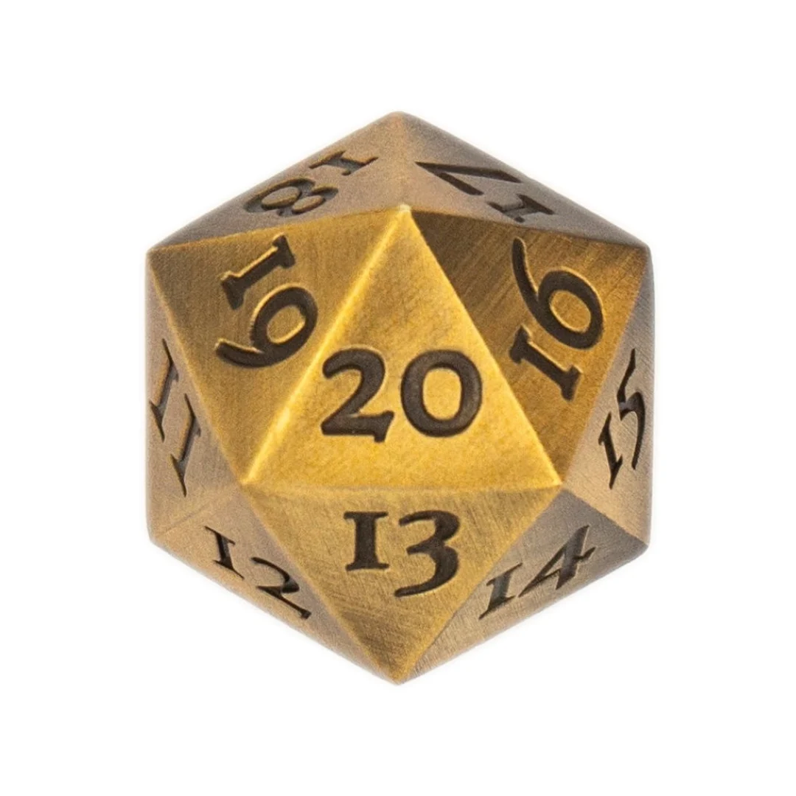
+ Marcadores, tokens ou dados (se necessário).
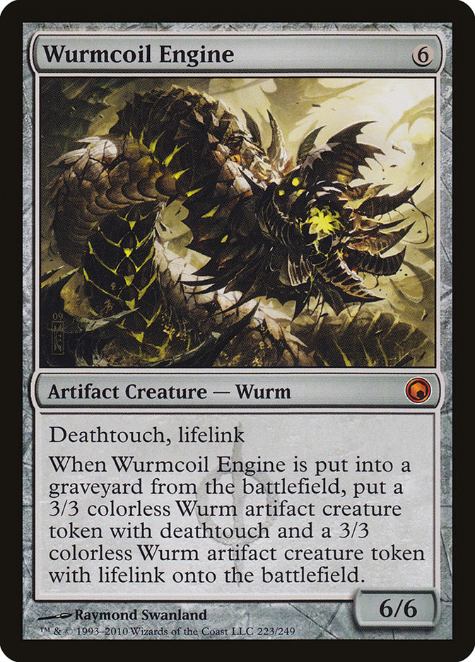
Tipos de Cartas
Terrenos: Geram mana, o recurso que você usa para jogar cartas.
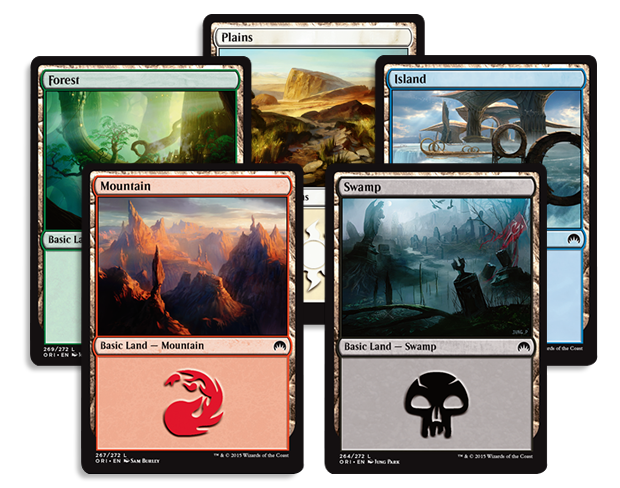
Criaturas: Atacam e defendem no campo de batalha.
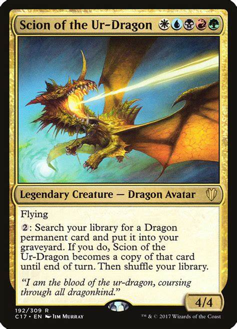
Feitiços (Sorcery): Efeitos poderosos jogados apenas no seu turno.
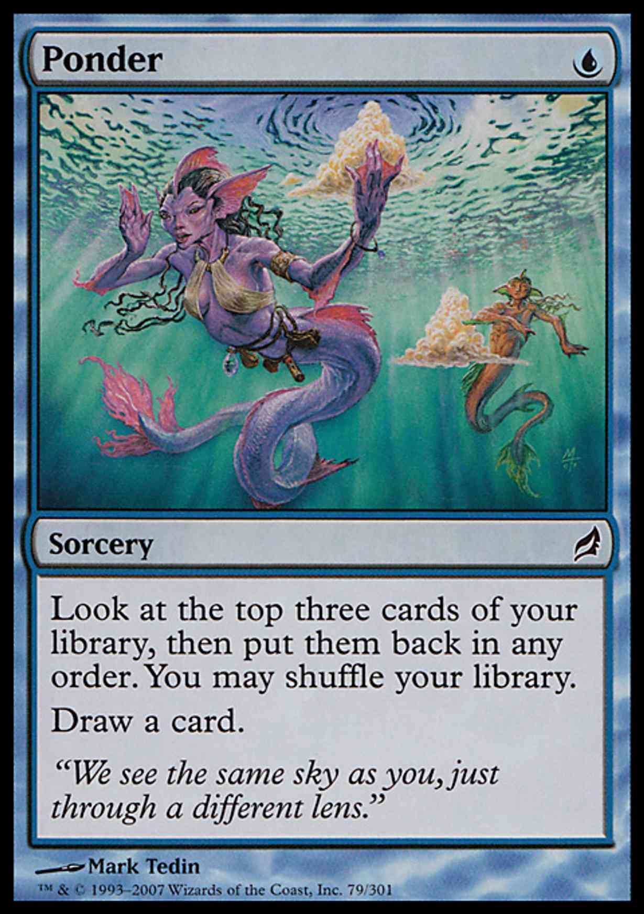
Instantâneos (Instant): Podem ser jogados em qualquer momento, até durante o turno do oponente.
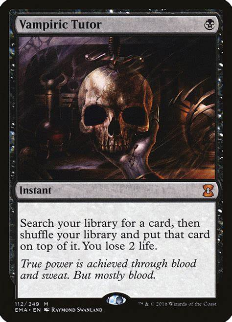
Encantamentos / Artefatos: Permanecem no jogo e têm efeitos contínuos ou ativados.
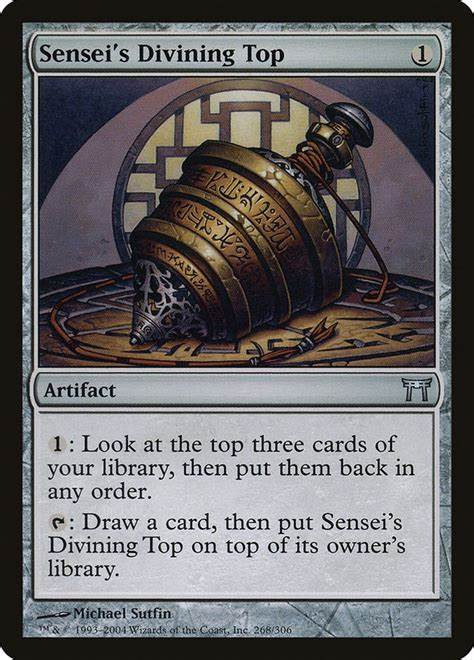
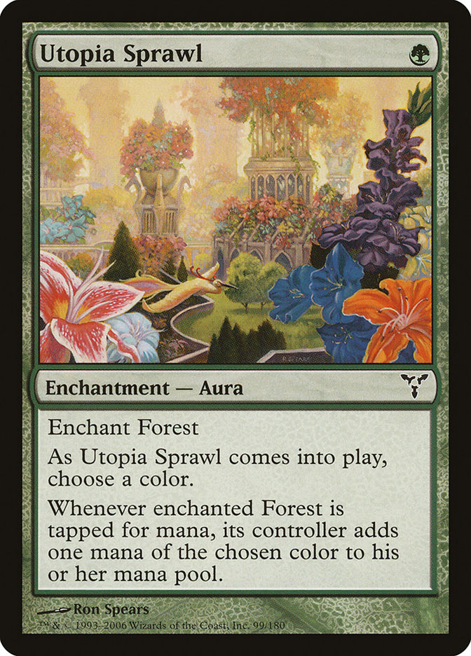
Planeswalkers: Representam aliados com habilidades especiais.
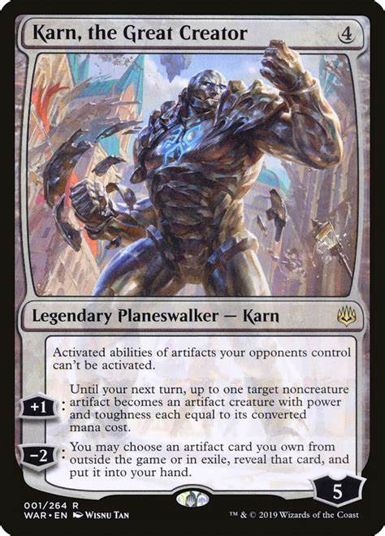
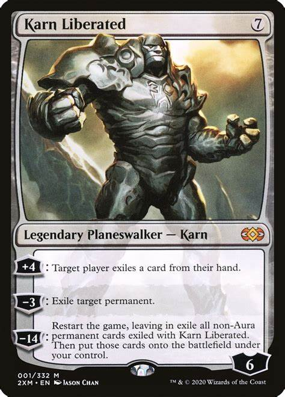
Estrutura do Turno
Cada jogador segue estas fases em seu turno:
* Desvirar (Untap Phase): Desvire todos os seus permanentes (terrenos, criaturas, etc...).
* Manutenção (Upkeep): Resolva efeitos que ocorrem no início do turno.
* Compra (Draw Step): Compre uma carta.
* Fase Principal 1 (Main Phase 1): Jogue terrenos, criaturas e outros feitiços.
* Combate (Combat Phase):
* Declaração de Atacantes: Escolha quais criaturas atacarão.
* Declaração de Bloqueadores: O oponente decide quais criaturas defenderão.
* Dano de Combate: Distribua dano entre atacantes e bloqueadores.
* Fase Principal 2 (Main Phase 2): Jogue mais cartas, se desejar.
* Final do Turno (End Step): Resolva efeitos de término de turno.
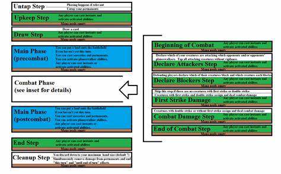
Como Jogar as Cartas:
* Para jogar uma carta, pague seu custo em mana, que é gerado pelos terrenos.
Por exemplo:
Uma criatura com custo "(2)(G)" requer 2 manas de qualquer cor e 1 verde.
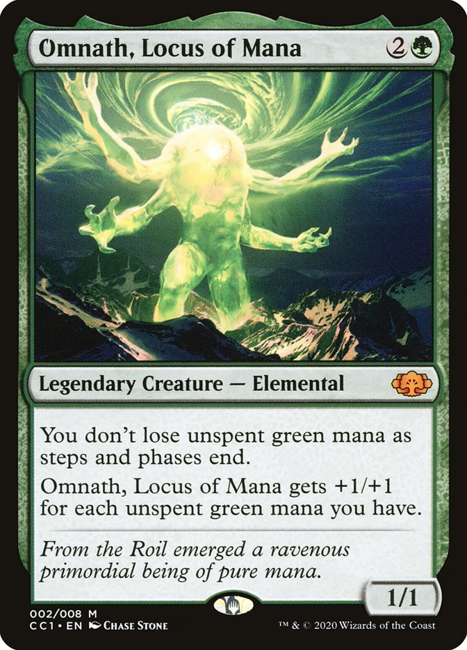
+ Conceitos Importantes:
Pilha (Stack): Todas as mágicas e habilidades entram na pilha e resolvem na ordem inversa (última a entrar, primeira a sair).
Tipos de Mana: Branco, azul, preto, vermelho e verde.
Fique Atento às Regras Específicas: Cada carta tem sua própria regra e efeito.